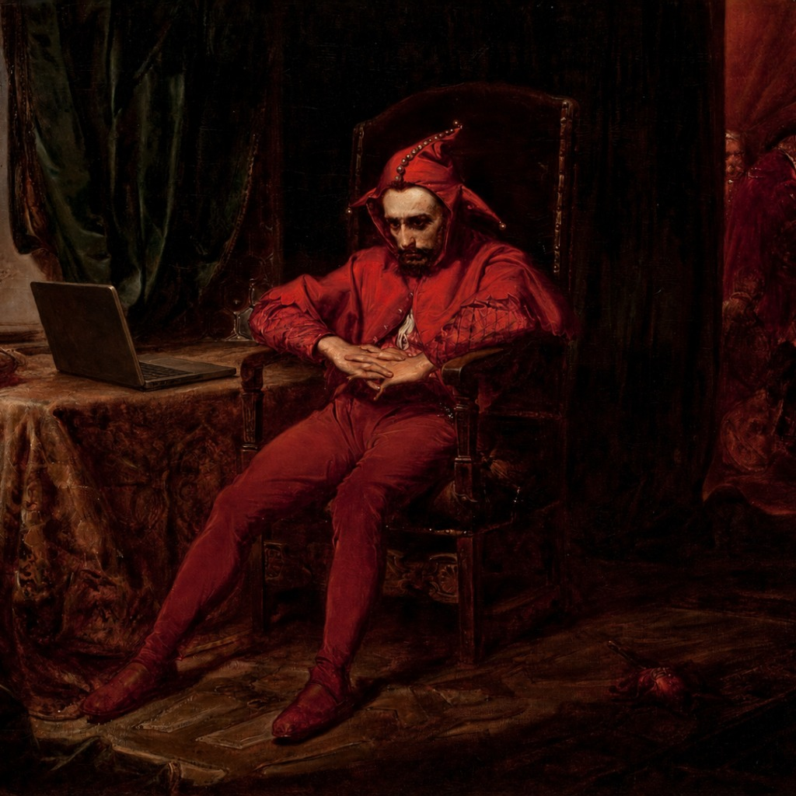

کلبه آتش زده
سهیل آقایانیدر حالی در دستش اسلحه بود و چشمانش از شدت خشم و ناراحتی قرمز شده بود به الکساندر خیره شده بود. میشد غضب را که از رگهای صورتش رد میشدن را دید. صورتش به واسطه خیسی اشکهایش قرمزتر بنظر میرسید. صندلی را چرخاند و روبهرویش نشست. برای ۵ ثانیه تمام صداها قطع شدند. انگار نه انگار که آتش در حال سوزاندن اتاق بود. هیچ دودی نبود آنها را اذیت کند. صورت الکساندر از شدت ضرب و شتم به شدت آسیب دیده بود. از گوشهها گونه و لبش نهرهایی از خون جاری بود. اما همچنان انقدر جان داشت که مستقیم در چشمان شیطان نگاه کند. هیچ حسی در چشمان الکساندر نبود. تنها یک چشم قهوهای روشن که مستقیم به صورت نحس شیطان خیره شده بود و سعی به دنبال پیدا کردن زیبایی آن بود. ناگهان احساساتش را در هم کوباند و به الکساندر (الکس) گفت: «خب زندگی زیباست نه؟ همه دوست دارن هی بیشتر زنده بمونن. حق زندگی بقیه رو میگیرن که خودشون بیشتر زنده بمونن.» سپس از صندلی بلند میشود و آن را به خورد آتش میدهد تا وقت بیشتری به او بدهد تا در این فضا بماند. بعد اسلحه را به سمت سر الکس میگیرد و میگوید: «حرفی برای گفتن داری؟» الکس هم با خونسردی و صورتی داغان سرش را بالا میگیرد و با لبخند مسخره میگوید: «حال خواهرت چطوره؟» در همین لحظه دانته در را در هم میکوبد و تا متوجه شیطان میشود به اون حتی اخطار و یا حتی اجازه حرف زندن نمیدهد و به او شلیک میکند. تیر اول به کتفش برخورد میکند و باعث میشود که کمی به عقب تلو بخورد. چهار گلوله بعدی بر سینهاش برخورد میخورد. دانته بعد از آن که زمین خوردن شیطان را دید با احتیاط به سمتش رفت. منتظر حرکت ناگهانیای بود که بار دیگر شلیک کند. وقتی به بالا سر شیطان رسید اسلحهاش را برداشت. تا اسلحه را برداشت متوجه مورد عجیبی درباره اسلحه شد. سبک بود. اسلحه را نگاه کرد. اسلحه خالی بود. شیطان رو به بالا نگاه کرد. دانته را میدید. خون سرفه میکرد. سعی نداشت دستش را بر روی زخمی بگذارد. میدانست که این پایان کار است. دانته دید شیطان حرفی میزند. سرش را کمی نزدیک آورد تا بهتر بشنود. «... میخواستم که ببینید.» سپس در حالی که چشمان شیطان باز بود مرد. دانته از جایش بلند شد و با نفرت خاصی به سمت شیطان نگاه کرد و با خود گفت: «چی رو نشون بدی؟ مردک نفرت انگیز» سپس به سمت الکس رفت. از صندلی بازش کرد از الکس خواست تا به اون تکیه دهد تا او را از محل آتش خارج کند. آتش لحظه به لحظه از شدت ناراحتی مرگ صاحبش عصبانیتر و افسار گسیختهتر میشد. همهچیز را میخواست به خاکستر تبدیل کند. صدا و نور آتش هر لحظه بیشتر میشد و گاهی اوقات زوزهای از سر ناراحتی سر میداد. گویا آتش زنده بود. موجودی وفادار که برای صاحبش عزاداری میکند. الکس و دانته از ساختمان خارج شدند. دانته کلید ماشین را در آورد و به الکس گفت: «خب حالا وقتشه که از اینجا خارج...» این جمله تمام نشده بود که احساس گرمی در پهلویش احساس کرد. صداها برای لحظهای حذف شد. نمیدانست چرا انقدر درد میکشد. گویا قلب در حال گرفتن بود. گرمای عجیبی در بدنش در حال پخش شدن بود. ابتدا دستش را بر روی قلبش گذاشت. تا قلبش را آرام کند. به او اطمینان دهد که خطری او را تهدید نمیکند. اما قلب او را به درد ننداخته بود. چاقوی الکس در پهلویش او را اذیت کرده بود. ناگهان بدنش به اون دستور زانو زدن را داد. گویا کنترلی بر بدنش نداشت. اسلحهاش بلند کرد تا سمت الکس نشان بگیرد اما قبل از آنکه متوجه شود تنها اسلحه شیطان را در دستش دید. اسلحه خالی از امید. الکس کمی به جلو قدم گذاشت انگار نه انگار که چاقویی در پهلوی دانته فرو کرده و اسلحهاش را برداشته. سپس به سمت دانته برگشت و گفت: «میدونی... شیطان هم یک زمانی فرشته بود. اما من از همون اول هیولا بودم.» سپس تیری در سر دانته خالی میکند. بدن بیجان او را در همان محوطه خاکی ساختمان رها میکند و خودرو را به سمت جادهها میتازاند.